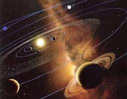
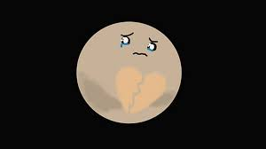
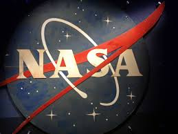

<!DOCTYPE html>
<html>

<head>
<title>Sistema Solar</title>
<meta charset = 'utf-8'>

</head>
<link rel= 'stylesheet' type='text/css' href='../css/estilos.css'>
</html>
<h1><body style = 'text-align:center;'><script>

/*
RAINBOW TEXT Script by Matt Hedgecoe (c) 2002
Featured on JavaScript Kit
For this script, visit http://www.javascriptkit.com
*/

// ********** cambia aquí

var text="Formación del sistema solar" // tu texto
var speed=80 // velocidad de movimiento 


if (document.all||document.getElementById){
document.write('<span id="highlight">' + text + '</span>')
var storetext=document.getElementById? document.getElementById("highlight") : document.all.highlight
}
else
document.write(text)
var hex=new Array("00","14","28","3C","50","64","78","8C","A0","B4","C8","DC","F0")
var r=1
var g=1
var b=1
var seq=1
function changetext(){
rainbow="#"+hex[r]+hex[g]+hex[b]
storetext.style.color=rainbow
}
function change(){
if (seq==6){
b--
if (b==0)
seq=1
}
if (seq==5){
r++
if (r==12)
seq=6
}
if (seq==4){
g--
if (g==0)
seq=5
}
if (seq==3){
b++
if (b==12)
seq=4
}
if (seq==2){
r--
if (r==0)
seq=3
}
if (seq==1){
g++
if (g==12)
seq=2
}
changetext()
}
function starteffect(){
if (document.all||document.getElementById)
flash=setInterval("change()",speed)
}
starteffect()
</script></body></h1>

<body>


<h3>
¿Cómo se formó el Sistema Solar?</h3>
<h5 align="left">Es difícil precisar el origen del Sistema Solar. Los científicos creen que puede situarse hace unos 4.650 millones de años.</h5>
<h5 align="left">Hay algunas explicaciones sobre cómo se ha formado nuestro Sistema Solar. Una de las más aceptadas es la teoría nebular formulada por René Descartes en 1644 y perfeccionada después por otros astrónomos.</h5>
<h5 align="left">Según la versión propuesta por Kant y Laplace, una inmensa nube de gas y polvo se contrajo a causa de la fuerza de la gravedad, probablemente, debido a la explosión de una supernova cercana. A causa de la contracción comenzó a girar a gran velocidad y se fue aplanando; por eso, el Sistema Solar resultante se parece más a un disco que a una esfera.</h5>
<div align="center"></div>
<h3></h3>
<h5 align="left">Hay otras cinco teorías o variaciones consideradas razonables:</h5>
<h5 align="left">La teoría de Acreción asume que el Sol pasó a través de una densa nube interestelar, y emergió rodeado de un envoltorio de polvo y gas.</h5>
<h5 align="left">La teoría de los Proto-planetas dice que inicialmente hubo una densa nube interestelar que formó un cúmulo. Las estrellas resultantes, por ser grandes, tenían bajas velocidades de rotación, en cambio los planetas, formados en la misma nube, tenían velocidades mayores cuando fueron capturados por las estrellas, incluido el Sol</h5>
<h5 align="left">La teoría de Captura explica que el Sol interactuó con una proto-estrella cercana, sacando materia de esta. La baja velocidad de rotación del Sol se atribuye a que se formó antes que los planetas.</h5>
<h5 align="left">La teoría Laplaciana Moderna asume que la condensación del Sol contenía granos de polvo sólido que, a causa del roce en el centro, frenaron la rotación solar. Después la temperatura del Sol aumentó y el polvo se evaporó.</h5>
<h5 align="left">La teoría de la Nebulosa Moderna se basa en la observación de estrellas jóvenes, rodeadas de densos discos de polvo que se van frenando. Al concentrarse la mayor parte de la masa en el centro, los trozos exteriores, ya separados, reciben más energía y se frenan menos, con lo que aumenta la diferencia de velocidades.</h5>
<div align="center"></div>
<tr>
<td><div align="center"><a href = 'planetas.html'></a><figcaption style = 'text-align:center;color:blue;'>Los planetas</figcaption></div></td>
</tr>
<tr>
<td><div align="center"><a href = 'historia.html'></a><figcaption style = 'text-align:center;color:blue;'>Historia</figcaption></div></td>
</tr>
<tr>
<td><div align="center"><a href = 'astrologia.html'></a><figcaption style = 'text-align:center;color:blue;'>Astrología y astronomía</figcaption></div></td>
</tr>
<tr>
<td><div align="center"><a href = 'curiosidades.html'></a><figcaption style = 'text-align:center;color:blue;'>Curiosidades</figcaption></div></td>
</tr>
<tr>
<td><div align="center"><a href = 'unpocodehumor.html'></a><figcaption style = 'text-align:center;color:blue;'>Un poco de humor</figcaption></div></td>
</tr>

<tr>
<td><div align="center"><a href = '.sol.html'></a><figcaption style = 'text-align:center;color:blue;'>Sol</figcaption></div></td>
</tr>
<tr>
<td><div align="center"><a href = 'energia.html'></a><figcaption style = 'text-align:center;color:blue;'>Energía solar</figcaption></div></td>
</tr>
<tr>
<td><div align="center"><a href = 'formacion.html'></a><figcaption style = 'text-align:center;color:blue;'>Formación del sistema solar</figcaption></div></td>
</tr>
<tr>
<td><div align="center"><a href ='nasa.html'></a><figcaption style = 'text-align:center;color:blue;'>Nasa</figcaption></div></td>
</body>
